LEC24C4 – Using various characterization models
Note: For introduction to the basics of characterization theory, we recommend the book by A. Tikhonravov, Optical coatings: design, characterization, monitoring, SPIE Press, 2024**
The main purpose of this example is to demonstrate that is can be useful to use different models for characterization and compare the results obtained within these models. The HfO2 film on the fused silica substrate is used as an example.
In the File -> Project menu of OptiChar, open the directory LEC24C4. The Fused silica substrate datafile needed to run this exercise and R & T at 200-1600 nm measurement datafile are already loaded into RAM. The R & T at 200-1600 nm datafile will be replaced by other files later after analyzing its accuracy and selecting two models for optical characterization.
Let us start with the analysis of the Data Fitting window. In the R tab of this window, we see a good match between the measured reflectance minima and the substrate reflectance. This allows us to assume that the film is homogeneous. Let us also check the match in the T tab of the Data Fitting window. All transmittance maxima are shifted downwards relative to the transmittance of the uncoated substrate. The observed shifts are typical for shifts associated with absorption in the film. Thus, in the further models used for characterization, we will assume that the film under study is homogeneous.
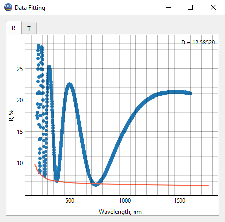 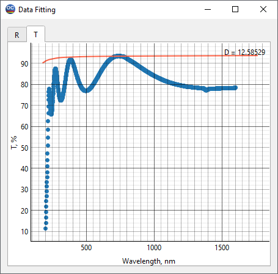
To analyze the accuracy of the R & T at 200-1600 nm measurement datafile, select the Total Losses option from the View menu. It is clear that our film has very strong absorption in the short-wavelength part of the measurement spectrum. Since the spectral region near 200 nm is not of primary interest for HfO2 applications, we will truncate our measurement data to the spectral region starting at 250 nm. This will also allow us to study the total losses in this region in more detail.
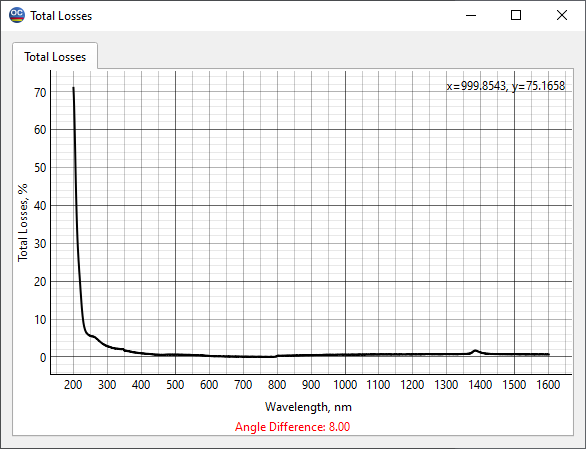
To exclude some of the measurement data, go the Preprocess Measurement Data option from the Data menu. In the Below line of the Measurement Preprocessing window set 250 and click OK. The measurement data will be truncated to the desired region.
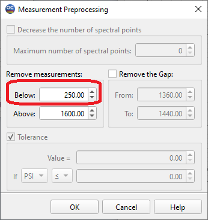
An analysis of the graph in the Total Losses window gives us the following. The increase in total losses near the left boundary of the spectral region is obviously due to the absorption of HfO2 in this region. The peak in the graph of total losses near 1380 nm should be attributed to the water absorption peak, associated with the residual presence of water in the fused silica substrate. But the rather smooth absorption plateau to the right of 800 nm has no physical explanation. At 800 nm, the spectrophotometer detectors switch, and it can be assumed that the measurement accuracy deteriorates. A careful analysis of the transmittance data near 800 nm shows that there is a sharp jump in the transmittance at this wavelength. Thus, we come to the following conclusion: the losses to the right of 800 nm are due to a false absorption associated with a systematic inaccuracy of the transmittance data in this spectral region.
Based on the above conclusion about the accuracy of transmittance data, we can use a model including a search for the extinction coefficient only using the measurement data in the 250-800 nm spectral region. At the same time, if we want to find only refractive index of the HfO2 film, we can do this in a wider range of 250-1600 nm using only the reflectance data. This is due to the fact that in the case of dielectric films, the reflectance is not sensitive to small absorption losses, and also to its better accuracy in this region.
To summarize, we will perform two characterization attempts using two different models and different subsets of the available measurement data. These subsets are stored in the measurement databases under the names R and T at 250-800 nm, 8 and 0 degrees and R at 250-1600 nm, 8 degrees.
Let us load the first of the stored subsets and run Layer Characterization with the Normal Dispersion model for the refractive index and UV-VIS model for the extinction coefficient. An excellent agreement between the model and measured data is achieved.
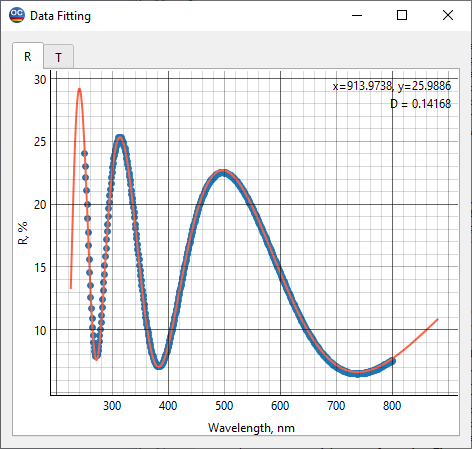 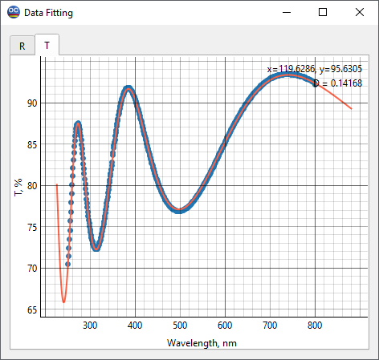
The found complex refractive index, i.e. the refractive index and extinction coefficient, is stored in the Layer Material database under the name n&k from R,T at 250-800 nm.
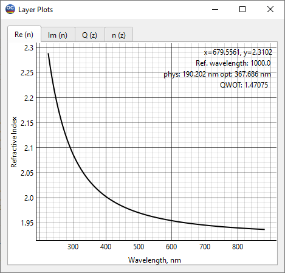 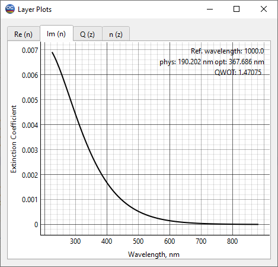
Then let us load the second of the stored subsets of the measurement data and run Layer Characterization with the Normal Dispersion model for the refractive index and Non-absorbing option for the extinction coefficient. Again, an excellent agreement between the model and measured data is achieved.
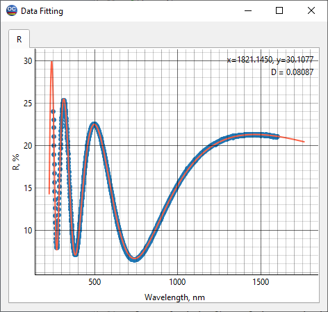
The found refractive index is stored in the Layer Material database under the name n from R at 250-1600 nm.
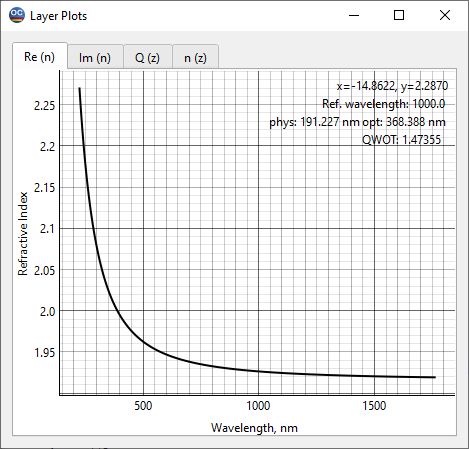
It is worth comparing the refractive indices of the HfO2 film found by the two characterization attempts using different models and subsets of measurement data. To do this, select the Compare Index Plots option in the View menu. The results obtained are in excellent agreement. The difference between the refractive indices found by these attempts does not exceed 0.3%.
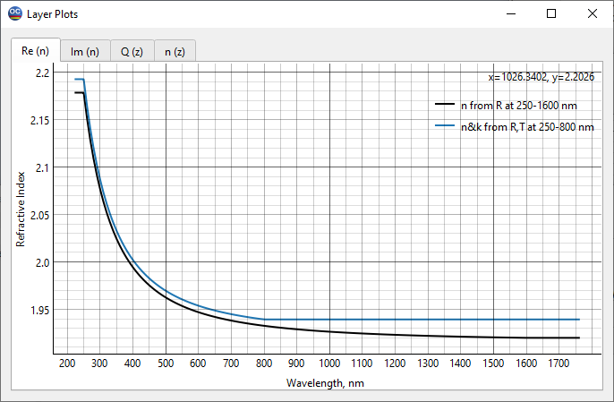